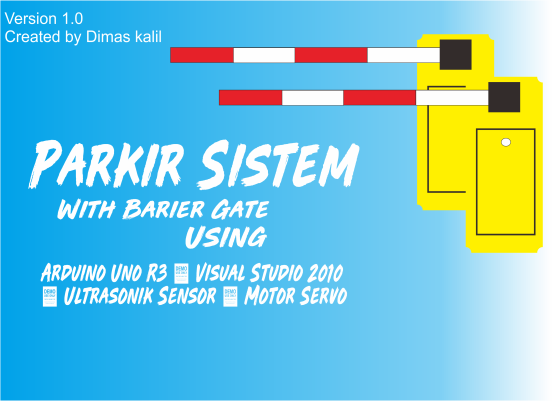
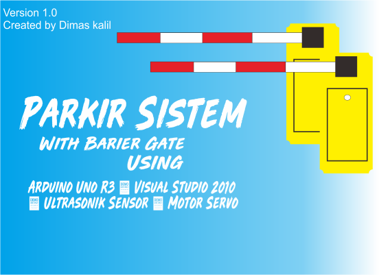

Palang Pintu parkir with Arduino & Visual Basic

 

Project Information
- Category: Mikrocontroller
- Maker: Dimas kalil
- Project date: 2020
- Type: Tugas Akhir
Prinsip Kerja
disini saya menggunakan Arduino R3 sebagai Mikrocontroller nya, dan aplikasi parkir sebagai media Transaksi. Pada proses masuk parkir..,apabila Sensor ultrasonik mengenai benda maka buzzer aka berbunyi(bip) dan LED sebagai Indikator, lalu Motor servo1 dijalankan menggunakan aplikasi parkir berbasis desktop dengan aksi membuka dan menutup gerbang. Begitupun dengan proses keluar parkir, motor servo2 dijalankan menggunakan aplikasi.
Sistem Rangkaian Sensor Cahaya


Project Information
- Category: Rangkaian Elektronika
- Maker: Dimas kalil, dkk
- Project date: 2016
Prinsip Kerja
LDR dan R1 sebagai pembagi tegangan, saat LDR mendapatkan cahaya maka hambatannya menjadi kecil < 10k dan R1 lebih besar sehingga tidak ada arus yang melewati kaki basis Transistor Q1 dan Transistor Q2 tidak mengaktifkan relay RL1 (Normaly open). saat LDR tidak mendapatkan cahaya (gelap) maka hambatannya kecil > 10k dan R1 lebih rendah sehingga arus melewati kaki basis Transistor Q1 dan mengaktifkan Transistor Q2 yang mengaktifkan relay RL1 dari keadaan normaly open ke normaly close, sehingga lampu mendapatkan arus listrik bolak balik dari sumber tegangan AC.